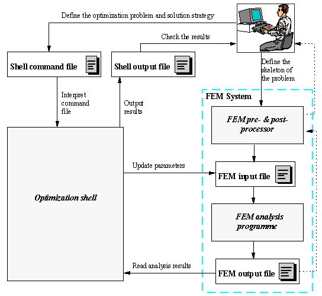
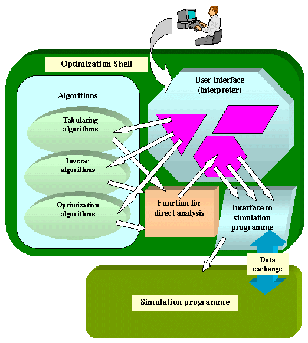
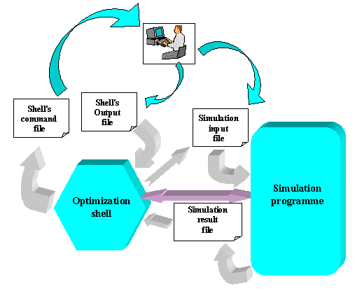

Main interaction points between user and the
system
are shell's command file and output file. User defines the problem and
its solution procedure by writing the command file which is interpreted
by shell's file interpreter. When the problem is being solved, the
shell
prints reports about its actions to its output file.
|  | (click
on image to enlarge it!)
Figure 1: Scheme of the optimization system which consists of the shell and a simulation programme. It is assumed that a finite element method (FEM) based programme is used for simulation. Basic interactions between user and the system and between the parts of the system are shown. |
User of the system typically defines a skeleton of the direct problems that are successively solved during the optimization process by the simulation programme. The optimization problem and the solution strategy are defined through the shell's command file. To ensure high flexibility at defining various problems, the command file syntax resembles a high level programming language. All necessary supporting utilities like optimization algorithms, function definition facilities, mathematical tools (function approximation, matrix operations, etc.) and interfacing with the direct simulation, are provided through the pre-defined shell interpreter functions.
During the optimization procedure, simulations are successively run at different values of parameters (design parameters in the case of optimization or model parameters in the case of inverse problems) to evaluate values and derivatives of the objective functions and constraints and eventually some other necessary data. The exact way how an individual analysis is performed is also defined in the command file, in an argument block of the "analysis" function. Each time the optimization algorithm (or some other supporting algorithm) requires evaluation of the objective function (or some other data bound by direct analysis), this block is interpreted. All functionality of the shell is available to the user for defining the way how the simulation is performed and how the connected data required by optimization algorithms is evaluated. Typically function of the interface between the shell and the simulation programme are used for this purpose, as well as some data manipulation and mathematical functions.
Structure of the optimization system is shown in Figure 2. Solution procedure is controlled by the command file interpreted by shell's interpreter. Commands (or functions) in this file trigger appropriate actions associated with them. Command arguments determine exactly how these actions will be performed.
The most important functions are those associated
with built-in optimization and other algorithms. Common to these
algorithms
is that they require successive evaluation of objective functions and
other
data bound with the simulation at different values of parameters. This
is always performed by a special function which is built in the shell.
This function among the other triggers the interpretation of the
"analysis"
command argument block where user defines how the direct analysis is
performed.
This includes the way how input data for a simulation is set or updated
according to parameter values, how the simulation is performed and how
the data required by algorithms is evaluated using the simulation data.
|  | (click
on image to enlarge it!)
Figure 2: Structure of the optimization system. Invocation relations (white arrows) and data exchange between the shell and the simulation programme (blue arrow) are shown. |
Beside file interpreter's functions which perform run algorithms and interface functions there are a lot of other functions which help the user to define the problem and its solution strategy. These functions enable the shell to interact with system environment, keep results of performed algorithms and use them as input data for other algorithms, perform various operations on the data, including basic mathematical operations, etc. All this is controlled through the interpretation of the command file written by user. Syntax of the command file enables not only sequential execution of built-in tools, but also flow control. All the data which at a given moment exists in the shell (i.e. was generated by shell's actions) can be used in loop and branching conditions or as arguments to interpreter's functions. This gives great flexibility to the system because there is unlimited exchange of the data between different functional units of the shell.
Figure 3 is a simple presentation of the
main
data flows in the optimization system. Data exchange between the shell
and the simulation programme can be performed through the simulation
input
and output files, however this arrangement can be replaced by a direct
interface. In this case, the shell and the simulation programme are
typically
integrated in one programme and exchange date directly by accessing
each
other's memory (sketched by the two sided arrow in the figure). The
shell
incorporates a general file interface by which it can interface any
simulation
programme which can use text file input and output. Of course, direct
interface
is more convenient because it is faster and because what happens in the
simulation programme can be better controlled by the shell.
|  | (click
on image to enlarge it!)
Figure 3: Data exchange between parts of the optimization system and user of the system. |
{kind=link}
{kind=link}
{kind=link}